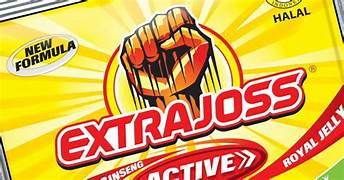

Bubuk Minuman Energi • Rasa Kunyit & Madu
Kemasan praktis untuk energi instan. Cukup campur dengan air.
Kemasan pouch isi 10 sachet. Hemat dan praktis untuk stok rumah.
Berbagai varian rasa dan kemasan

Bergulir otomatis ke kanan
+2 juta sachet terjual
4.8 ★ (42rb ulasan)
Pengiriman cepat